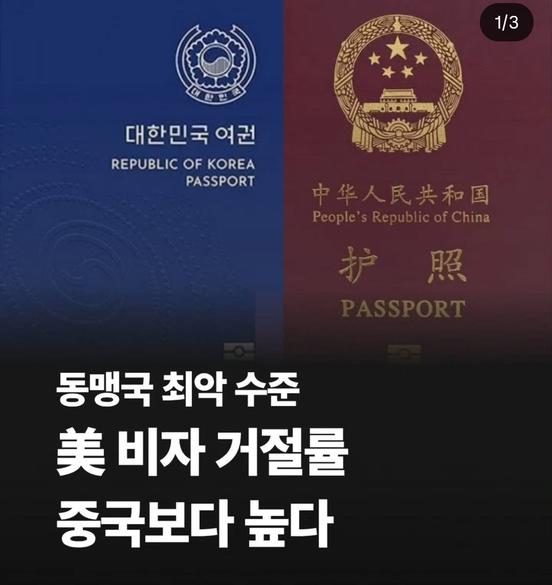
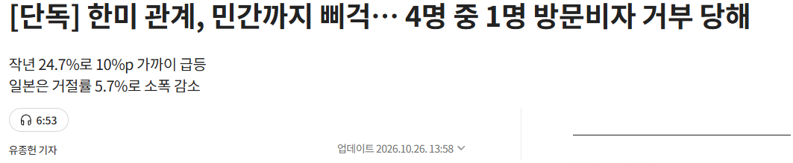
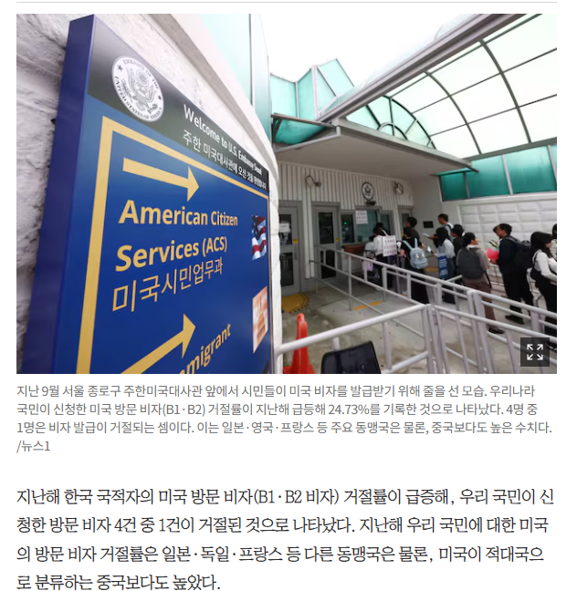
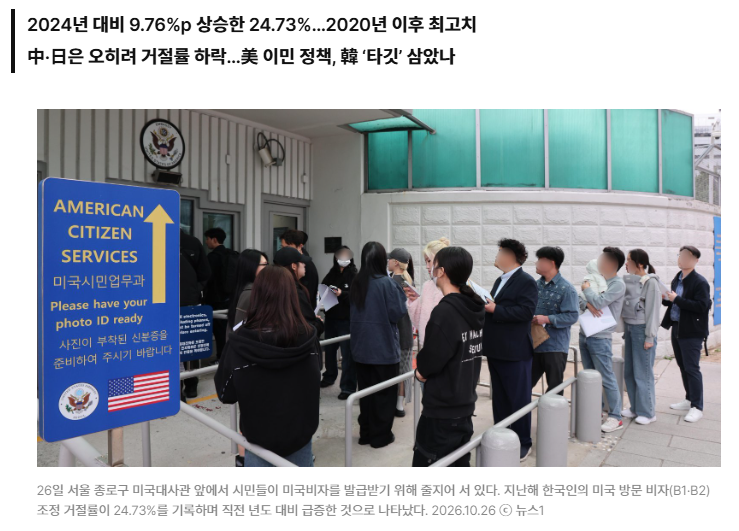

국회의원도 빠꾸먹음
미국이랑 대한민국이랑 뭔 동맹인데?ㅋㅋㅋㅋ 군사동맹임ㅋㅋㅋㅋㅋ 경제나 정치 사회 동맹 아님ㅋㅋㅋㅋ
존나 악의적인 기사 투명하네 참 ㅋㅋ
근데 미대사관이 한국 전과를 어떻게 암?
??? : 우리나라에는 전과자가 너무 많아요.
??: 남자들의 90%가 성매매를 경험한 것으로 드러났다 (성매매업소 앞에서 설문 진행)
수준의 기사 ㅋㅋ
전에 문제없다가 갑자기 사고 터지고 상무가 갈 정도의 미팅이 전무급으로 업되면서 미팅할 업체들도 다 담당자 직급들 업되면서 난리도 아니었음
전무 보좌하는 팀들도 난리가 아니였지
하던거 던지고 미국 출장가는데 출장 기간내내 계속 진행중인 일 체크 한다고 연락함